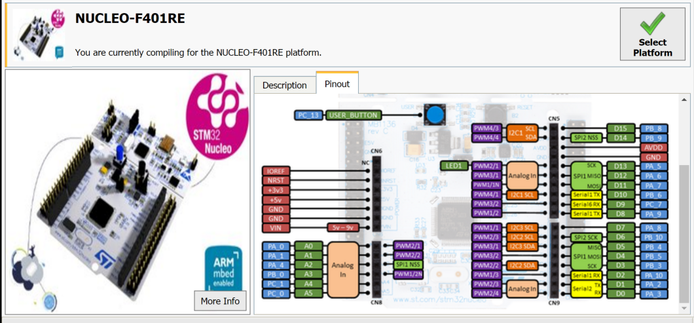

Board to PC communication over USB
The Arm Mbed microcontroller on your board can communicate with a host PC over the same USB cable that you use for programming.
If you're working on Windows 7, you might need to install a serial driver.
This allows you to:
- Print out messages to a PC terminal (useful for debugging).
- Read input from a PC keyboard.
- Communicate with applications running on a PC to exchange data.
Hello World - printing messages
This program prints a "Hello World!" message that you can view on a serial terminal. Mbed OS redirects any printf() statements to the board's debug USB serial.
/*
* Copyright (c) 2006-2020 Arm Limited and affiliates.
* SPDX-License-Identifier: Apache-2.0
*/
#include "mbed.h"
int main()
{
printf("Hello World!\n");
while (1);
}
Viewing output in a serial terminal
Serial terminals run on your host PC. They provide an interface where your Mbed board can print and where you can type characters back to your board.
Mbed CLI provides a serial terminal that is configured with a default baud rate of 9600. You can either set it to open after compilation, or open it manually.
Opening a serial terminal after compilation
You can use one command to compile an application, flash it onto a board and open a serial terminal:
mbed compile -t <TOOLCHAIN> -m <TARGET> --flash --sterm
When the board is flashed, it starts printing to the terminal (Hello World!, in this example).
To close the serial terminal, enter Ctrl + C.
Notes:
- If your application uses a baud rate other than 9600, specify it with
-b <BAUDRATE>in the command above. - This method only works for a single board. To work with multiple boards, open a serial terminal manually as described below.
Manually opening a serial terminal
You can open a serial terminal manually, which is useful when the board is already flashed with the desired application (for example, one built with Keil Studio Cloud).
When a single board is connected, run:
mbed sterm
mbed sterm starts message printing.
Notes:
- If your application uses a baud rate other than 9600, specify it with
-b <BAUDRATE>when opening the serial terminal. - If you have multiple boards connected:
- Run
mbedlsto find the port of the board you want to use. - Run
mbed sterm -p <PORT>.
- Run
- To list all options, run
mbed sterm -h. - To close the serial terminal, enter Ctrl + C.
Additional examples - reading user inputs
In addition to printing messages, Mbed OS applications can also read keyboard inputs from the user using the BufferedSerial and UnbufferedSerial classes.
Use your terminal application to interact with the following examples.
If you're not sure how to build these examples and run them on your board, please see our build tools section.
Echo back characters you type
/*
* Copyright (c) 2006-2020 Arm Limited and affiliates.
* SPDX-License-Identifier: Apache-2.0
*/
#include "mbed.h"
static BufferedSerial pc(USBTX, USBRX);
int main()
{
char msg[] = "Echoes back to the screen anything you type\n";
char *buff = new char[1];
pc.write(msg, sizeof(msg));
while (1) {
pc.read(buff, sizeof(buff));
pc.write(buff, sizeof(buff));
}
}
Use the U and D keys to make LED1 brighter or dimmer
Note: This example only works if LED1 is on the Pwm pin of the board you are using, such as the NUCLEO-F401RE.
The pin map of the NUCLEO-F401RE shows LED1 on the Pwm pin.
/*
* Copyright (c) 2006-2020 Arm Limited and affiliates.
* SPDX-License-Identifier: Apache-2.0
*/
#include "mbed.h"
static BufferedSerial pc(USBTX, USBRX); // tx, rx
PwmOut led(LED1);
float brightness = 0.0;
int main()
{
char msg[] = "Press 'u' to turn LED1 brightness up, 'd' to turn it down\n";
char *c = new char[1];
pc.write(msg, sizeof(msg));
while (1) {
pc.read(c, sizeof(c));
pc.write(c, sizeof(c));
if ((*c == 'u') && (brightness < 0.5)) {
brightness += 0.01;
led = brightness;
}
if ((*c == 'd') && (brightness > 0.0)) {
brightness -= 0.01;
led = brightness;
}
}
}
Pass characters in both directions
Tie pins together to see characters echoed back.
/*
* Copyright (c) 2006-2020 Arm Limited and affiliates.
* SPDX-License-Identifier: Apache-2.0
*/
#include "mbed.h"
static BufferedSerial pc(USBTX, USBRX);
static BufferedSerial uart(D1, D0);
DigitalOut pc_activity(LED1);
DigitalOut uart_activity(LED2);
int main()
{
char *pc2uart = new char[1];
char *uart2pc = new char[1];
while (1) {
if (pc.readable()) {
pc.read(pc2uart, sizeof(pc2uart));
uart.write(pc2uart, sizeof(pc2uart));
pc_activity = !pc_activity;
}
if (uart.readable()) {
uart.read(uart2pc, sizeof(uart2pc));
pc.write(uart2pc, sizeof(uart2pc));
uart_activity = !uart_activity;
}
}
}
Read to a buffer
/*
* Copyright (c) 2020 Arm Limited and affiliates.
* SPDX-License-Identifier: Apache-2.0
*/
#include "mbed.h"
// Create a serial object
static BufferedSerial pc(USBTX, USBRX);
int main(void)
{
char buffer[10] = {};
while (1) {
if (pc.readable()) {
ThisThread::sleep_for(100);
pc.read(buffer, 10);
printf("I got '%s'\n", buffer);
}
}
}